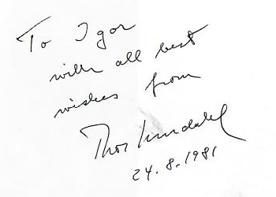

Цифровой фотоальбом 105 страниц
Цифровой фотоальбом 105 страниц
Без прошлого нет настоящего - гласит народная мудрость. Издательство ”Дальпресс” с удовольствием представляет дальневосточному читателю творческую работу приморского фотохудожника Игоря Гусева. Под ее обложкой более сотни иллюстраций. В основном, черно-белых. Этот контраст - дух и символ эпохи 50-80-х, своеобразный этап переходного возраста России.
Книга Игоря Гусева - о целом поколении людей, которое училось, взрослело, любило и набивало шишки вместе со своей страной. Тогда и фотографию ценили по-особому, а за Лучшим кадром охотились не один день. "Трое суток шагать...” - это про таких людей как Гусев. Его имя хорошо знакомо не только истинным профессионалам пера и снимка, но и тем, кто в разные годы соприкасался с его творчеством.
На ум невольно приходит одно слово - ностальгия. По детству, по родной околице, малой родине... - именно эти чувства будит в душе фотокнига нашего земляка.
Пользуясь случаем, мы не можем не заметить, что в летописи приморской фотожурналистики немало ярких имен. Издательство ”Дальпресс” будет радо осуществить подобного рода проекты и с другими авторами. Польза от этого несомненна: и для тех, кто снимает, и для тех, кто по-настоящему умеет ценить искусство фотографии.
Фотография тем и ценна, что дает почувствовать вкус и формат времени, такого неуловимого и быстротечного. Еще вчера свежий кадр был реальностью, а сегодня он - история.
Фотоальбом Игоря Гусева напоминает пеструю мозаику ярких сюжетов из жизни, в которые вплелись и его собственная судьба, и судьбы его героев.
Листая книгу, невольно испытываешь трепетное ощущение сопричастности к делам давно минувших дней. Будто окунулся в синеву беззаботного детства, поговорил с мамой, прошелся по родной улице, поймал подбадривающие улыбки друзей. Эти чувства неизбывны и вечны. Ведь жизнь - она как хлеб: не приедается. Пройдет череда лет и все опять повторится сначала.
Игорь Гусев хорошо знает свое дело, до тонкости разбирается в нюансах профессии. Но его опыт не только умение ”поймать” кадр, найти нужную точку съемки. Это еще и стремление к поиску, к совершенству, к гармонии - и в профессии, и в жизни. Наверное, симбиоз этих качеств и давал повод подлинным ценителям фотографии в еще не столь далекие времена ”Красного знамени" (одной из лучших газет страны) употреблять по отношении к Гусеву слово Мастер. И это говорит о многом.
А еще он лирик и романтик, человек подкупающей искренности и доброты. C ним всегда надежно и интересно. То, что вы держите в руках хорошую книгу замечательного мастера, - приятный и закономерный этап его творческого пути.
C этим его и поздравим.
Прежде чем нажать на спуск затвора, я спросил мальчишку: ”Павлик, ты знаешь, чей хлеб ешь? Ответ последовал мгновенно: ”Батькин... и свой. Он книгу писал, а я по дому управлялся”.
Чем чаще обращаешься мыслями к пережитому, тем роднее и явственнее ”зазубринки” давно минувших дней. Поводом для воспоминаний может стать хранимая с незапамятных времен вещица или пожелтевший от времени снимок. Вот и я не так давно основательно перебрал полувековой давности архив.
В том, что альбом открывается именно этим снимком, есть своя логика: все мы родом из детства. В хрупких пацанячьих фигурках - до боли знакомые приметы времени: деревенское босоножье, ”домашняя“ стрижка под полубокс, папкина фронтовая пилотка на голове... На обороте фотографии надпись: ”Караси из Стародубска” , Вы не видите никаких карасей? И не мудрено, Просто фамилия у этих сорванцов такая - Карась.
Учительница начальных классов Мария Николаевна Павленко.
Во время подготовки репортажа с уборочной предложил сфотографироваться школьнику - подсобному рабочему. ”А я рыжий. Таких в газетах не печатают”, - пошутил он. - А я не сразу опубликую. Лет через 40-50, когда полиняешь. Идет?" - "Если через пятьдесят - валяй. Ждать - не догонять”. Я нажал на кнопку ”Зенита”...
Нам, послевоенному поколению, так хотелось побыстрее вырасти, чтобы устроиться на работу, помогать родителям, поскорее преодолеть бедность и разруху. Но мама успокаивала: ” Всему свое время. Москва не сразу строилась...”.
И все-таки в те годы мы взрослели и мужали быстрее.
Во время фу больного матча на стадионе ”Водник”.
Сварщик НСРЗ Валерий Воловик.
Приморье, Дальнереченский район, 1983
Первые полосы советских газет редко выходили без портрета человека труда. "Люди и дело", "Приморский характер". А вот снять человека труда не по шаблону, а интересно, нестандартно - это подлинное искусство. Сложнее нет задачи. Для меня такие съемки всегда были делом чести и престижа.
Прибрежный лов.
Митинг на Владивостокском фарфоровом заводе в защиту справедливой борьбы вьетнамского народа. Этот снимок ответсекретарь полтора часа не решался ставить в номер по причине ”суровости лиц советских рабочих“ на первом плане. Дождались редактора ”Красного знамени” Владимира Григорьевича Чухланцева. Он разрядил обстановку: ”На первую полосу, немедленно, крупным планом . - И добавил: - А если завтра война?"
На съемке работал плечом к плечу с местным телеоператором. Когда церемония подходила к завершению, ответственный работник завода, спохватившись, произнес главное: “Руководить бригадой Якова Петровича доверено его старшему сыну Юрию...". На глазах ветерана заблестели слезы. И тут же погасли софиты... "Ты что, снимать не будешь?” - спрашиваю оператора. "Слезы у нас не пройдут, - ответил он. - Если надо - подсвечу! И я успел снять этот единственный главный кадр, буквально на 1/15 секунды.
Находка, НСРЗ, 1968
Н. П. Федореев и В. В. Приходько возводят подземный рудник на месторождении "Восток-2"
Директор совхоза ”Казанский” Партизанского района Петр Иванович Даниленко.
Эта поистине детективная история случилась в Находке. Группа журналистов прямо с симпозиума "похитила” знаменитого норвежского этнографа и путешественника, двадцатикратного доктора наук Тура Хейердала и устроила морское "крещение" в поселке Приисковом. Как и подобает фоторепортору, я оказался в нужном несте с точностью до секунды, за что и получил благодарный автограф от ”крещенного" , август, 1981 б б

Норвежский путешественник, исследователь и писатель. Известен морскими экспедициями; в августе 1981 года участвовал в международном семинаре в Находке.
Источник: Библиотеки Находки
Японское море. 1977
Председатель Совмина СССР А. Н. Косыгин вместе с сопровождающими лицами был доставлен к причалу Находкинского морвокзала на... видавшем виды буксирчике - кантователе. Перед этим изящный военный корабль пытался проделать тот же маневр сквозь плотный лед. Не получилось. (Пятнадцать лет висел этот снимок в рубке буксира. Потом наступили иные времена...)
Советский государственный деятель, председатель Совета министров СССР. В январе 1967 года посетил Приморье и Находку.
Источник: «Краснознамённый Тихоокеанский флот»
Советский писатель, лауреат Нобелевской премии по литературе. 8 мая 1966 года посетил Находку по пути в Японию.
Источник: Библиотеки Находки
Советский лётчик-космонавт, Герой Советского Союза. Второй человек, совершивший орбитальный космический полёт, и первый, проведший в космосе более суток.
Источник: Роскосмос (PDF)
Начальник пожарного караула Дальзавода Анатолий Алексеенко.
Познакомиться с новоявленным предпринимателем в гости заезжал сам Александр Солженицын. На этом снимке - Николай Михайлович с супругой Еленой Григорьевной в окружении детей и внуков. Сегодня хозяйство возглавляют старший сын Косьяненко Николай Николаевич и его жена Надежда.
Директор совхоза ”Шкотовский” Николай Иванович Метликин. У нас с ним были доверительные и теплые отношения. Как-то решил поместить его снимок, сделанный ”скрытой” камерой, в репортаж. Узнав об этом, он два часа уговаривал меня ”не бросать его под танк”. Но фотография уже стояла в полосе... С тех пор Николай Иванович не подпускал меня к себе на близкое расстояние...
Когда слава о нем дошла до Москвы, оттуда запросили его фотографию. Этот снимок я и отправил в одно из центральных издательств. Там герою до синевы ”выбрили” лицо, убрали “усталость” во взгляде, ”зажгли” глаза. Потом чабан говорил районному газетчику, доставившему метровый плакат прямо в поле: ”Добрую фотографию мне ваш фотограф сделал, пусть за барашком приезжает...”
Родился в 1902 году в Чегеме-1. Был выселен в Приморский край по национальному признаку. Реабилитирован 31 октября 1995 года.
Чабан совхоза им. КПСС в Лазовском районе Приморского края. Снят Игорем Гусевым в 1963 году. По воспоминаниям фотографа, его портрет использовало одно из центральных издательств для выпуска плаката.
Источник: Игорь Гусев. «Прощай и здравствуй», 2006, с. 52
Источник: «Открытый список», данные МВД Кабардино-Балкарии. В карточке фамилия указана как Джантудуев.
Уссурийское локомотивное депо ”оккупировали” журналисты из края
Штукатуры-маляры треста КПД из бригады Р. В. Насырь в картинной галерее Владивостока.
Привычная точка съемки фотокорреспондента ТАСС по Дальнему Востоку Юрия Яковлевича Муравина.
Фотокорреспондент ТАСС по Дальнему Востоку. Автор фотографий Владивостока и других дальневосточных территорий.
Источник: Фотокаталог «Нэт-Фильм», Муравин / ТАСС
Всю свою жизнь посвятил проблемам воспроизводства пресноводного лосося в условиях Дальнего Востока.
Советский гидробиолог, доктор биологических наук, профессор. Один из основоположников изучения экосистем лососевых рек Дальнего Востока России.
Источник: ФНЦ Биоразнообразия ДВО РАН (PDF)
Капитан дальнего плавания, Герой Социалистического Труда. Первая в мире дипломированная женщина — капитан дальнего плавания. Преподавала в Дальневосточном высшем инженерном морском училище имени адмирала Г. И. Невельского.
Источник: Морская коллегия Российской Федерации
За плечами стрелка ВОХР ТЭЦ-2 Луки Яковлевича Панченко три войны - первая мировая, гражданская и Отечественная.
В ресторан подвезли мясо.
Вот-вот канет в лету паровозная тяга...
Он приехал в Находку инкогнито. С помощью знакомого милиционера мы взяли его ”под колпак” в досмотровом зале местной таможни. Потом безнадежно долго прощались. Наконец, он не выдержал и сказал: “Мужики, если вы не поспешите в редакцию писать обо мне репортаж, то через 17 мгновений я сойду с поезда и навсегда останусь в Находке...".
Советский писатель. Автор романов «Семнадцать мгновений весны» и «Майор Вихрь».
Источник: Российская государственная библиотека
Президент США Дж. Форд и Генеральный секретарь ЦК КПСС Л. Брежнев за несколько минут до Официальных переговоров об ограничении стратегических наступательных вооружений. Владивосток, ст. Санаторная. 23 ноября 1974 года
Президент США. 23–24 ноября 1974 года участвовал во Владивостокской встрече с Леонидом Брежневым по вопросам ограничения стратегических вооружений.
Источник: Президентская библиотека Джеральда Форда
Генеральный секретарь ЦК КПСС. Представлял советскую сторону на переговорах с президентом США Джеральдом Фордом во Владивостоке 23–24 ноября 1974 года.
Источник: Президентская библиотека Джеральда Форда
Своей малой родиной я считаю прекрасную дальневосточную землю: Сахалин, Курилы, Приморье. В середине 40-х, после войны, она приняла нашу семью, обогрела, накормила, обустроила. Такой она останется навсегда в моей памяти - доброй, гостеприимной и бескорыстной
Здесь море подходит к самым домам, речка перегружена рыбой, есть лебяжье озеро и пограничная застава. А еще - крутые лестницы, по взгоркам и сопкам. На всякий ”цунамный” случай.
Дальше на восток российских земель больше нет.
Это когда по рыбе водишь баркасы с рыбой, ешь рыбу вареную, жареную, соленую... Даже чай заедаешь рыбой.
Перед таким долгожителем впору преклонить колено...
Он владел уникальными секретами выращивания зимостойких сортов яблок, груш, раннеспелого винограда. Таких садов, как в орденоносном совхозе ”Партизанский” , не было до самого Урала.
Приморский садовод. Работал в селе Новицком Партизанского района. Вывел шесть сортов яблонь, награждён орденом Ленина. Почётный гражданин Партизанского района.
Источник: Приморская краевая публичная библиотека, с. 112 (PDF)
Сюда в конце XIX века устремлялись переселенцы из Украины, Белоруссии, Молдавии, западных районов России. Новые края становились малой родиной для них и их потомков.
Российский путешественник. В 1990 году совершил одиночный поход к Северному полюсу, в 1990–1991 годах — одиночное кругосветное плавание на яхте «Караана».
Источник: Официальный сайт Фёдора Конюхова
Во время встречи китобойной флотилии ”Советская Россия" из антарктической экспедиции. Молодожены Алексей и Елена Глуховы снова вместе.
Память - это закон души, по которому каждый из нас сверяет свои жизненные ценности. Память - категория нравственная. Она должна давать добрые всходы и рождать надежду. Обидно, что порой пустыми разговорами, идеологической шелухой и сиюминутным расчетом мы убиваем нашу память, обрекая на забвение все то, что должны хранить в душе вечно
Cтроитель Василий Афанасьевич Осипенко и судоремонтник Дмитрий Никифорович Бондаренко
Бригадир монтажников Владивостокского домостроительного комбината. Полный кавалер ордена Трудовой Славы с 1983 года. В подписи к снимку 1982 года указан его более поздний наградной статус.
Источник: Википедия
Участник Великой Отечественной войны, командир стрелкового отделения. Полный кавалер ордена Славы.
Источник: Музей истории Дальнего Востока имени В. К. Арсеньева (PDF)
В день открытия мемориала "Боевая слава Тихоокеанского флота”.
Владивостокский художник Жорж Кочубей и боевой летчик Петр Филатович Аникин.
Приморский живописец и педагог. Известен портретами и пейзажами Дальнего Востока.
Приморцы - Герои Советского Союза и полные кавалеры ордена Славы (слева направо): Г. С. Григорьев, Д. Н. Бондаренко, И. С. Сундиев, Н. С. Диденко.
Участник Великой Отечественной войны, командир стрелкового отделения. Полный кавалер ордена Славы. В подписи к фотографии указан вторым слева.
Источник: Музей истории Дальнего Востока имени В. К. Арсеньева (PDF)
Участник Великой Отечественной войны, артиллерист. Герой Советского Союза с 1945 года. Отличился при форсировании Одера в январе 1945 года. С 1969 года жил в Кавалерове Приморского края.
Источник: «Герои страны»
Участник Великой Отечественной войны, разведчик, старшина. Полный кавалер ордена Славы. Родился в селе Кронштадтка Приморья, после войны жил в Партизанске.
Источник: Википедия
Этот снимок сделан в 1975 году. 30 лет ждет сына с войны колхозница из Осиновки Меланья Федоровна Штепа. Запомнился он матери в темной спецовке ФЗО, веселым и ласковым.
Герой Советского Союза, кинооператор студии ”Дальтелефильм” Виктор Петрович Кузнецов (справа) с однополчанином.
Герой Советского Союза, участник Великой Отечественной войны. После войны работал кинооператором Владивостокского телевидения и студии «Дальтелефильм».
Источник: История ГТРК «Владивосток»
Новая эпоха для меня начинается после неудавшейся горбачевской перестройки. Отражать этот переход страны из одного состояния в другое пришлось уже на цветных фотоматериалах. В те дни мы на самом деле сделали шаг из тьмы в многообещающее радужное будущее. Не всё получилось, но шаг-то был сделан...
Ректор ДВГУ Владимир Иванович Курилов
Юрист, учёный и преподаватель. Ректор Дальневосточного государственного университета в 1990–2010 годах.
Источник: Википедия
Олень-цветок — подлинное украшение Сихотэ-Алиньских отрогов.
Торжественное шествие в День Победы
Финал.
«Никогда не хвали себя взахлеб за успехи, не ругай последними словами за промахи. Все придет само собой».
Игорь Гусев
На фото: с внуком Дмитрием.
Снимок Александра Гузенко
Приморский фотограф. Автор фотоальбома «Прощай и здравствуй», изданного во Владивостоке издательством «Дальпресс» в 2006 году.
Источник: Библиотеки Находки
“ПРOЩАЙ И ЗДРАВСТВУЙ". Фотоальбом. - Владивосток: издательство ”Дальпресс”, 2006
Редактор-составитель, макет Александр Каракуян
Верстка, компьютерная обработка иллюстраций Гузель Жданова
Дизайн обложки Татьяна Петерсон
Корректор Римма Павлова
Обработка изображений и верстка сайта flexboxer